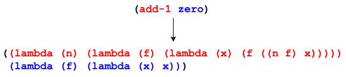
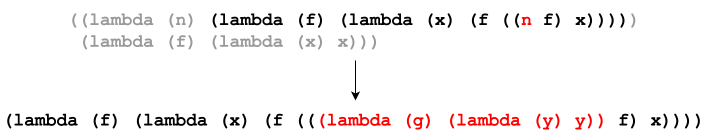
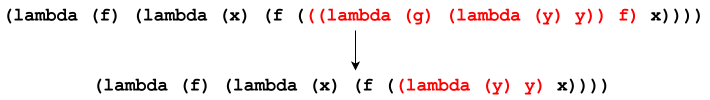
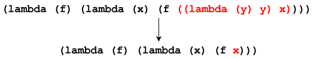

Understanding Church numerals
Table of Contents
1. Introduction
Church numerals are a representation of the natural numbers in the context of lambda calculus. Church numerals, as well as lambda calculus itself, was invented by the mathematician and computer scientist Alonzo Church.
This article was mainly motivated by Exercise 2.6 of Structure and Interpretation of Computer Programs.
2. Zero and one
The definition of zero is:
\[ \lambda f. \lambda x. x \]
The definition of one is:
\[ \lambda f. \lambda x. f\ x \]
3. Increasing a number
As mentioned in the introduction, this article was motivated by Exercise 2.6 of
SICP. This exercise provides the reader with the previous definition of zero
along with an add-1 procedure, which increases its input; from those
definitions, the reader is expected to calculate one.
Although the value of one was shown in the previous section for illustrating
Church numerals, it’s worth going over the expansion of add-1 in detail.
3.1. Definition of add-1
This is the definition of add-1 in λ-notation1.
\[ \lambda n. \lambda f. \lambda x. f (n\ f\ x) \]
This is the equivalent definition of add-1 in Lisp.
(define add-1 (lambda (n) (lambda (f) (lambda (x) (f ((n f) x))))))
3.2. Beta reduction
Through β-reduction, a call to add-1 with an argument of zero can be
examined, understanding why the Church numeral for one is returned. Each step
of the reduction will be explained and highlighted using Lisp syntax.
First, the call to add-1 is expanded, replacing each symbol with its bound
expression.

Then, the outer-most call is evaluated, replacing the n parameter in the body of
add-1 with the value of zero. Specifically, to avoid naming collisions, n is
replaced with the α-conversion of zero, where the symbols f and x are
substituted with y and z, respectively.

Once the outer call has been evaluated, the expression can be simplified by
evaluating the call to zero, that is, the call to the lambda whose parameter is
y, and whose argument is f. Since the parameter y does not appear in the body,
is is essentially discarded, resulting in (lambda (z) z), the identity function.

Finally, the call to the identity lambda can be evaluated, that is, the call to
the lambda whose parameter is z and whose argument is x. This call simply
evaluates to the argument, x. This final expression matches the definition of
one from the previous section.

Naturally, the same β-reduction process can be expressed in λ-notation.
\begin{align*} \text{one} &= (\lambda n. \lambda f. \lambda x. f\ (n\ f\ x)) (\lambda f. \lambda x. x) \\ &= \lambda f. \lambda x. f\ ((\lambda y. \lambda z. z)\ f\ x) \\ &= \lambda f. \lambda x. f\ ((\lambda z. z)\ x) \\ &= \lambda f. \lambda x. f\ x \end{align*}